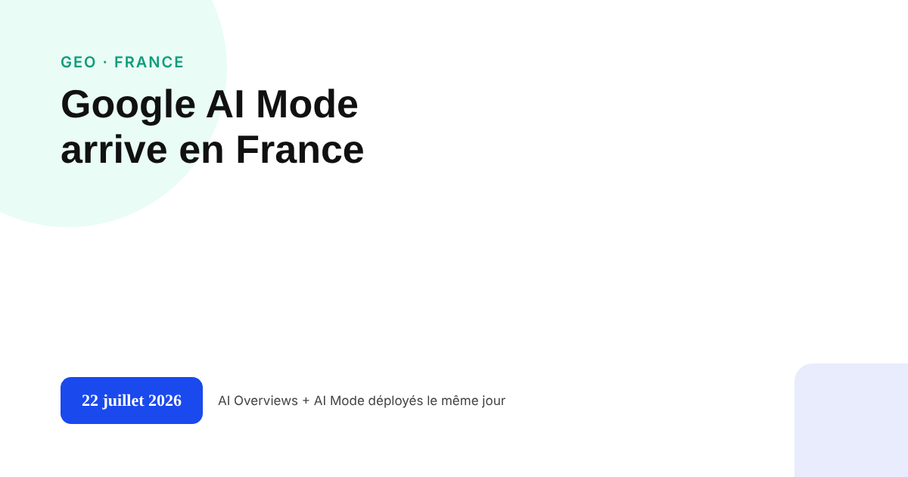
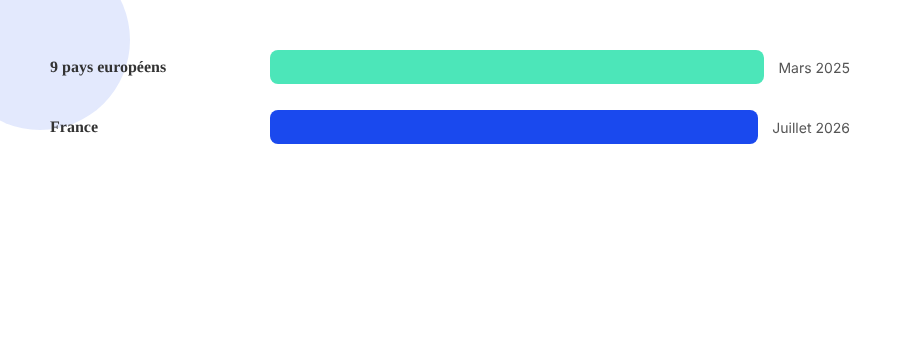

Google AI Mode arrive en France : ce que ça change pour votre visibilité
La France a été le dernier grand marché européen à recevoir les AI Overviews et AI Mode. Le retard s'explique, mais le déploiement a maintenant eu lieu — et il change la donne même sans intégration publicitaire pour l'instant.

Le 22 juillet 2026, Google a déployé simultanément les AI Overviews et AI Mode en France. Rien d'inédit sur le principe : les deux fonctionnalités existaient déjà ailleurs depuis longtemps. Ce qui l'est, c'est le calendrier : la France a été l'un des derniers grands marchés européens à les recevoir, loin derrière neuf autres pays du continent qui les avaient déjà en mars 2025.
Pourquoi ce retard n'était pas technique
Le décalage s'explique largement par les tensions autour de la loi française sur les droits voisins de la presse, qui encadre la rémunération des éditeurs pour la reprise de leurs contenus par les plateformes. Les négociations entre Google et les éditeurs français autour de cette question ont retardé un déploiement qui était, lui, disponible techniquement depuis longtemps dans d'autres pays comparables.
Deux fonctionnalités distinctes, déployées le même jour
Les AI Overviews restent intégrés directement en haut des résultats de recherche classiques, pour une partie des requêtes seulement. AI Mode est un onglet de recherche séparé, pensé pour des échanges conversationnels en plusieurs étapes plutôt qu'une requête unique — l'utilisateur peut affiner sa demande au fil de la conversation, un peu comme avec un chatbot, mais directement intégré à l'interface de recherche Google. Les deux coexistent : l'un n'est pas une évolution de l'autre.

Ce que les premières données françaises montrent déjà
Une première étude française a depuis comblé une partie du vide initial. Ahrefs a suivi 963 domaines dans Google Search Console sur les 28 jours précédant le lancement et les 9 jours suivants : la baisse moyenne de CTR ressort à 3,4 %, mais grimpe à 23,1 % pour les domaines les plus exposés aux AI Overviews, et à 20,4 % pour le secteur de la santé, le plus touché. Neuf jours de recul, c'est court : la tendance reste à confirmer sur une période plus longue. En parallèle, l'ACPM a signalé une baisse de trafic des sites d'information français par rapport à septembre 2025, mais la cause fait débat : le directeur de Google France affirme n'observer aucune baisse significative sur les requêtes d'actualité, et plusieurs analystes évoquent aussi une mise à jour anti-spam survenue à la même période. Une étude américaine antérieure, sur un marché au déploiement plus ancien, observait une chute du CTR de la position 1 pouvant atteindre 58 % fin 2025 : un ordre de grandeur à ne pas transposer tel quel en France.
Ce qui ne change pas dans l'urgence
Ni les AI Overviews ni AI Mode n'intègrent de publicité en France pour l'instant : la pression concurrentielle immédiate reste sur l'organique, pas sur le payant. Fin octobre 2026, Google a étendu la publicité dans AI Mode à dix autres marchés (Australie, Canada, Inde, Kenya, Malaisie, Nouvelle-Zélande, Nigeria, Pakistan, Philippines, Singapour) — la France n'en fait pas partie, mais la bascule pourrait ne pas être loin derrière. Face à un changement aussi récent, les fondamentaux restent le point d'appui le plus solide : une structure claire, des données factuelles vérifiables, une autorité établie — les mêmes critères qui comptent pour le SEO classique comme pour la visibilité dans les réponses génératives. Revoir toute sa stratégie de contenu sur la base d'un déploiement de quelques mois serait aller plus vite que les données ne le permettent.
FAQ
Qu'est-ce qui distingue Google AI Mode des AI Overviews ?
AI Overviews reste intégré en haut des résultats de recherche classiques, pour une partie des requêtes. AI Mode est un onglet de recherche à part, pensé pour des échanges conversationnels en plusieurs étapes plutôt qu'une requête unique — les deux fonctionnalités coexistent et ont été déployées en France le même jour.
Pourquoi la France a-t-elle reçu AI Overviews et AI Mode si tard par rapport au reste de l'Europe ?
Les AI Overviews avaient déjà été déployés dans neuf autres pays européens dès mars 2025. Le retard français est largement attribué aux tensions autour de la loi sur les droits voisins de la presse, qui a retardé les négociations entre Google et les éditeurs français avant le déploiement.
Faut-il déjà changer sa stratégie SEO à cause du déploiement d'AI Mode en France ?
Pas dans l'urgence. Les premières données françaises (étude Ahrefs, 9 jours de recul) montrent un effet réel mais encore récent à confirmer ; les fondamentaux (structure claire, autorité, données factuelles citables) restent valables pour le SEO classique comme pour la visibilité dans ces réponses génératives.
Envie de savoir où vous en êtes dans ces réponses génératives ?
Pour aller plus loin, voir la page GEO, et l'article L'impact réel des AI Overviews de Google sur votre trafic SEO.
Pour continuer sur ce sujet.